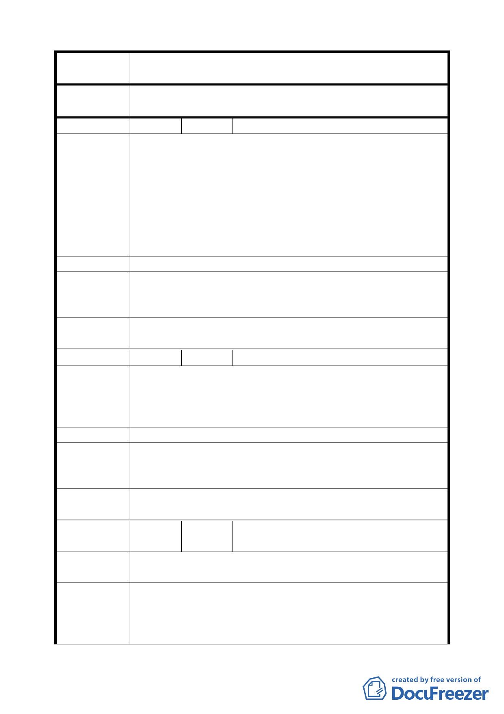

案 名 臺北市文山區都市計畫通盤檢討（細部計畫）案
委 員 會 議 本陳情意見雖屬測繪、地政及樁位線等問題，請都市發展局
決 議 另專案協助陳情人處理相關事宜。
編 號 ７ 陳情人 許培國里長（09430074500）
建議位置：景美仙跡岩。
建議理由：
居住在文山區地區居民，每日到「仙跡岩廟」爬山人數眾多，
陳 情 理 由 年輕人較多、中老年齡較少，如果從懷恩隧道旁或從海巡署
（ 興 隆 ） 後方、興隆路三段 304 巷進入、或是從木柵路，只要能開闢
新道路能夠到達仙跡岩，是居住在本地區居民一致所盼望能
夠達成此願望。不但多數喜歡，更會造成地方繁榮、增進商
機。
建 議 辦 法 盼望能夠新開闢一條道路到達景美仙跡岩廟上。
專案小組
審 查 結 論 本陳情意見移請交通局研議處理。
（94.7.7）
委員會議
決議
依專案小組審查結論辦理。
編 號 ８ 陳情人 高逸松（09430074500）
建議位置：興隆路三段 206 巷 208 號。
陳 情 理 由 建議理由：
（ 興 隆 ） 體育場以北 206 巷原計畫道路用地約 3 米，影響救災及周邊
交通。
建 議 辦 法 變更道路用地為 10 至 12 米。
專案小組
審 查 結 論 同主要計畫綜理表編號 9。
（94.7.7）
委 員 會 議 師專用地涉及地主意願整合及開發方式可行性評估等議題，
決 議 因無法於本計畫審議前完成檢討計畫，退由市府另案辦理。
編
號９
陳情人
王 麗 嘉 里 長 （ 09430074500 、
09430082800）
陳情理由
（興隆）
（空白）
一、 本（興泰）里內住宅多為「住 3」型，惟辛亥路四段 214
建議辦法
號等沿街住戶仍為「住 2」型住宅，有失公平，擬請將
上述住宅即刻更正為「住 3」型住宅，以維公平正義。
二、 文山區辛亥隧道入口意象規劃設計已完成，竟未列工程
三二